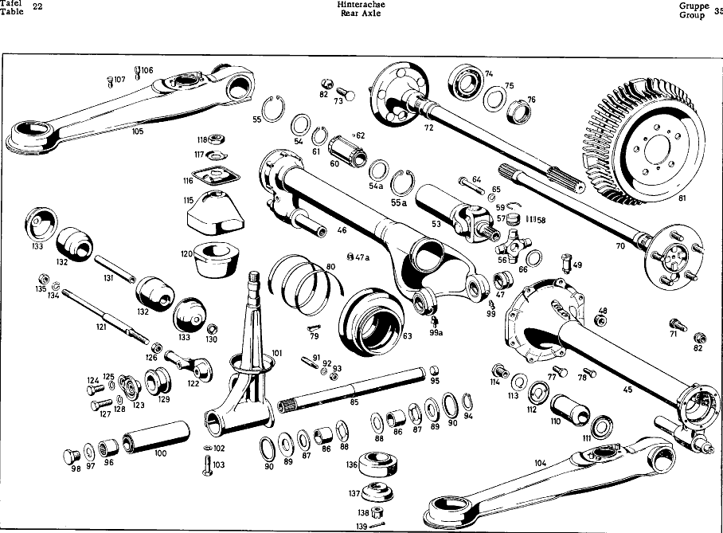

| № | Артикул | Название | Кол. | Примечание | Ограничение |
|---|---|---|---|---|---|
| 45 | A 180 350 44 19 | SUPPORTING TUBE | 1 | TUBE, LEFT, с THRUST ARM SUPPORT AND SCREW PLUG | |
| 46 | A 180 350 39 19 | Несущая труба | 1 | TUBE, RIGHT, с THRUST ARM SUPPORT | |
| 47 | A 180 351 01 50 | - втулка | 2 | для REAR AXLE TUBE, RIGHT | |
| 48 | A 186 997 00 32 | - ЗАГЛУШКА РЕЗЬБОВАЯ | 1 | для OIL FILLING IN AT REAR AXLE TUBE, LEFT ONLY VALID FOR REAR AXLE TUBE 180 350 44 19; M24X1,5 | |
| 49 | A 180 350 02 90 | BREATHER | 1 | для REAR AXLE TUBE | |
| 53 | A 180 350 05 13 | Триподный ШРУС | 1 | ||
| 54 | A 188 357 00 52 | - Диск | 2 | IN YOKE до зад. моста 7509694 | |
| 54 | A 188 357 00 52 | - Диск | 1 | IN YOKE до зад. моста 7509694 | |
| 54a | A 180 357 01 52 | - Диск | 1 | IN YOKE с зад. моста 7509695 | |
| 55a | A 000 994 29 41 | - Стопорное кольцо | 1 | IN YOKE с зад. моста 8505390 | |
| 56 | A 180 357 00 13 | - ЗВЕЗДА ШАРНИРНАЯ | 1 | ||
| 57 | A 120 357 01 14 | - ВТУЛКА | 4 | ||
| 59 | A 120 994 01 35 | - СТОПОРН. КОЛЬЦО | NB | OPTIONAL | |
| 60 | A 180 350 07 13 | - Скользящая муфта | 1 | с GUIDE PLATE | |
| 62 | A 180 981 00 86 | - Ролик | 132 | ||
| 63 | A 110 357 01 91 | МАНЖЕТА | 1 | ||
| 64 | A 180 353 00 76 | TIGHTENING SCREW, INNER | 1 | для YOKE, INNER | |
| 66 | A 180 353 30 52 | РАСПОРНАЯ ШАЙБА | 1 | OPTIONAL для YOKE, INNER | |
| 70 | A 180 350 13 10 | REAR AXLE | 1 | ||
| 71 | A 120 401 01 71 | - Шпилька крепления колеса | 5 | ||
| 72 | A 180 350 14 10 | REAR AXLE | 1 | ||
| 73 | A 120 401 01 71 | - Шпилька крепления колеса | 5 | ||
| 74 | A 183 981 00 25 | ШАРИКОПОДШИПНИК | 2 | для REAR AXLE SHAFT | |
| 75 | A 183 353 03 73 | предохранитель | 2 | для REAR AXLE SHAFT | |
| 76 | A 153 357 00 26 | Шлицевая гайка | 2 | для REAR AXLE SHAFT | |
| 81 | A 180 421 08 01 | ТОРМОЗНОЙ БАРАБАН | 2 | с RADIAL RIPS | |
| 82 | A 110 990 00 59 | SHPERICAL COLLAR NUT | 4 | для BRAKE DRUM AT WHEEL BOLT, REAR AXLE SHAFT SEE ALSO GROUP 33 AND 40 | |
| 85 | A 180 351 06 74 | БОЛТ | 1 | для REAR AXLE SUSPENSION | |
| 86 | A 180 351 01 53 | Проставочная втулка | 2 | OPTIONAL BETWEEN REAR AXLE TUBE MOUNTING AND CONNECTION PIN | |
| 87 | A 180 351 14 52 | Компенсационная шайба | 2 | для REAR AXLE TUBE, OUTSIDE | |
| 88 | A 180 351 13 52 | Центрирующее кольцо | 2 | OPTIONAL BETWEEN REAR AXLE TUBE AND REAR AXLE HOUSING, INSIDE | |
| 89 | A 180 351 03 51 | Проставочное кольцо | 2 | ON CONNECTION PIN AT REAR AXLE TUBE MOUNTING, OUTSIDE | |
| 90 | A 180 351 09 86 | Резиновое кольцо | 4 | ON SHIMS | |
| 91 | A 180 351 00 74 | Клин | 1 | для CONNECTION PIN AT REAR AXLE HOUSING | |
| 94 | A 180 994 03 41 | Стопорное кольцо | 1 | IN CONNECTION PIN | |
| 96 | A 180 351 11 53 | РАСПОРН. ТРУБКА | 1 | ON CONNECTION PIN, FRONT | |
| 97 | A 180 994 01 12 | Стопорная шайба | 1 | для CONNECTION PIN AT SILENT BLOCK IN SUPPORT | |
| 98 | A 180 997 04 30 | Резьбовая пробка | 1 | для CONNECTION PIN AT SILENT BLOCK IN SUPPORT | |
| 99a | A 000 997 11 88 | GREASE FITTING | 1 | IN FRONT EYE с зад. моста 6519125 | |
| 100 | A 111 350 02 75 | САЙЛЕНТ-БЛОК | 1 | IN SUPPORT, REAR AXLE SUSPENSION | |
| 101 | A 180 350 09 32 | SUPPORT WITH RETAINER | 1 | для REAR AXLE SUSPENSION | |
| 104 | A 180 350 00 29 | THRUST ARM | 1 | для REAR AXLE | |
| 105 | A 180 350 01 29 | THRUST ARM | 1 | для REAR AXLE | |
| 106 | A 120 990 09 20 | - болт | 4 | для MOUNTING SHOCK ABSORBER | |
| 107 | A 120 990 10 20 | - болт | 4 | для MOUNTING SHOCK ABSORBER | |
| 110 | A 120 352 07 65 | Резиновая опора | 2 | для THRUST ARM, REAR FOR THRUST ARM AT REAR AXLE TUBE | |
| 111 | A 120 352 05 76 | TIGTHENING PLATE | 2 | для RUBBER MOUNTING, WHEEL SIDE FOR THRUST ARM AT REAR AXLE TUBE | |
| 112 | A 120 352 06 76 | TIGHTHENING PLATE | 2 | для RUBBER MOUNTING, SCREW SIDE FOR THRUST ARM AT REAR AXLE TUBE | |
| 113 | A 120 994 04 12 | RETAINING PLATE | 2 | для THRUST ARM AT REAR AXLE TUBE | |
| 114 | A 120 990 00 01 | HEX.-HD.SCREW | 2 | для THRUST ARM AT REAR AXLE TUBE | |
| 115 | A 180 351 10 86 | Резиновое кольцо | 1 | с BUSHING для REAR AXLE SUSPENSION, TOP AT BODY FLOOR | |
| 117 | A 180 351 03 73 | RETAINING PLATE | 1 | для REAR AXLE SUSPENSION, TOP AT BODY FLOOR | |
| 120 | A 180 351 05 86 | Резиновое кольцо | 1 | для REAR AXLE SUSPENSION, BOTTOM AT BODY FLOOR | |
| 121 | A 180 351 01 96 | CROSS STRUT | 1 | для REAR AXLE SUSPENSION AT BODY FLOOR | |
| 122 | A 180 351 05 40 | SHACKLE | 1 | OPTIONAL для CROSS ARM FOR REAR AXLE SUSPENSION AT BODY FLOOR | |
| 123 | A 180 351 04 40 | SHACKLE | 1 | OPTIONAL для CROSS ARM FOR REAR AXLE SUSPENSION AT BODY FLOOR | |
| 129 | A 180 351 00 48 | Резиновая опора | 1 | для CROSS ARM AT SUPPORT | |
| 130 | A 180 351 00 76 | WASHER | 1 | для CROSS ARM | |
| 131 | A 180 351 06 53 | SPACER TUBE | 1 | для CROSS ARM | |
| 132 | A 180 351 07 44 | Резиновое кольцо | 2 | для CROSS ARM | |
| 133 | A 180 351 03 43 | CUP | 2 | для CROSS ARM | |
| 136 | A 111 352 00 65 | Резиновая опора | 2 | для THRUST ARM, FRONT | |
| 137 | A 110 352 00 67 | ТАРЕЛКА | 2 | для RUBBER MOUNTING FOR THRUST ARM AT BODY FRAME с шасси 7500461 с шасси 7500461 | |
| 138 | A 180 352 03 72 | ГАЙКА | 2 | для THRUST ARM AT BODY FRAME с шасси 7500461 с шасси 7500461 | |
| A 120 994 04 35 | - СТОПОРН. КОЛЬЦО | NB | OPTIONAL | ||
| A 120 994 06 35 | - СТОПОРН. КОЛЬЦО | NB | OPTIONAL | ||
| A 120 994 07 35 | - СТОПОРН. КОЛЬЦО | NB | OPTIONAL | ||
| A 120 994 08 35 | - СТОПОРН. КОЛЬЦО | NB | OPTIONAL | ||
| A 180 353 31 52 | РАСПОРНАЯ ШАЙБА | 1 | OPTIONAL для YOKE, INNER | ||
| A 180 353 33 52 | РАСПОРНАЯ ШАЙБА | 1 | OPTIONAL для YOKE, INNER | ||
| A 180 353 35 52 | РАСПОРНАЯ ШАЙБА | 1 | OPTIONAL для YOKE, INNER | ||
| A 180 353 37 52 | РАСПОРНАЯ ШАЙБА | 1 | OPTIONAL для YOKE, INNER | ||
| A 180 353 39 52 | РАСПОРНАЯ ШАЙБА | 1 | OPTIONAL для YOKE, INNER | ||
| A 180 353 41 52 | РАСПОРНАЯ ШАЙБА | 1 | OPTIONAL для YOKE, INNER | ||
| A 180 353 43 52 | РАСПОРНАЯ ШАЙБА | 1 | OPTIONAL для YOKE, INNER | ||
| A 180 353 45 52 | РАСПОРНАЯ ШАЙБА | 1 | OPTIONAL для YOKE, INNER | ||
| A 180 353 47 52 | РАСПОРНАЯ ШАЙБА | 1 | OPTIONAL для YOKE, INNER | ||
| A 180 353 49 52 | РАСПОРНАЯ ШАЙБА | 1 | OPTIONAL для YOKE, INNER | ||
| A 180 351 18 53 | Проставочная втулка | 2 | OPTIONAL BETWEEN REAR AXLE TUBE MOUNTING AND CONNECTION PIN | ||
| A 180 351 17 53 | Проставочная втулка | 2 | OPTIONAL BETWEEN REAR AXLE TUBE MOUNTING AND CONNECTION PIN | ||
| A 180 351 16 53 | Проставочная втулка | 2 | OPTIONAL BETWEEN REAR AXLE TUBE MOUNTING AND CONNECTION PIN | ||
| A 180 351 15 53 | РАСПОРН. ТРУБКА | 2 | OPTIONAL BETWEEN REAR AXLE TUBE MOUNTING AND CONNECTION PIN | ||
| A 180 351 14 53 | Проставочная втулка | 2 | OPTIONAL BETWEEN REAR AXLE TUBE MOUNTING AND CONNECTION PIN | ||
| A 180 351 14 52 | Компенсационная шайба | 2 | OPTIONAL BETWEEN REAR AXLE TUBE AND REAR AXLE HOUSING, INSIDE | ||
| A 180 351 15 52 | Дистанционная шайба | 2 | OPTIONAL BETWEEN REAR AXLE TUBE AND REAR AXLE HOUSING, INSIDE | ||
| A 180 351 16 52 | Компенсационная шайба | 2 | OPTIONAL BETWEEN REAR AXLE TUBE AND REAR AXLE HOUSING, INSIDE | ||
| A 180 351 17 52 | Компенсационная шайба | 2 | OPTIONAL BETWEEN REAR AXLE TUBE AND REAR AXLE HOUSING, INSIDE | ||
| A 180 351 18 52 | Компенсационная шайба | 2 | OPTIONAL BETWEEN REAR AXLE TUBE AND REAR AXLE HOUSING, INSIDE | ||
| A 180 351 19 52 | Компенсационная шайба | 2 | OPTIONAL BETWEEN REAR AXLE TUBE AND REAR AXLE HOUSING, INSIDE | ||
| A 180 351 27 52 | Компенсационная шайба | 2 | OPTIONAL BETWEEN REAR AXLE TUBE AND REAR AXLE HOUSING, INSIDE | ||
| A 180 351 28 52 | Компенсационная шайба | 2 | OPTIONAL BETWEEN REAR AXLE TUBE AND REAR AXLE HOUSING, INSIDE | ||
| A 180 351 29 52 | Центрирующее кольцо | 2 | OPTIONAL BETWEEN REAR AXLE TUBE AND REAR AXLE HOUSING, INSIDE | ||
| A 180 351 30 52 | Компенсационная шайба | 2 | OPTIONAL BETWEEN REAR AXLE TUBE AND REAR AXLE HOUSING, INSIDE | ||
| A 180 351 20 52 | Компенсационная шайба | 2 | OPTIONAL BETWEEN REAR AXLE TUBE AND REAR AXLE HOUSING, INSIDE | ||
| A 180 351 31 52 | Компенсационная шайба | 2 | OPTIONAL BETWEEN REAR AXLE TUBE AND REAR AXLE HOUSING, INSIDE | ||
| A 180 351 32 52 | Центрирующее кольцо | 2 | OPTIONAL BETWEEN REAR AXLE TUBE AND REAR AXLE HOUSING, INSIDE | ||
| A 180 351 14 40 | SHACKLE | 1 | OPTIONAL для CROSS ARM FOR REAR AXLE SUSPENSION AT BODY FLOOR | ||
| A 180 351 13 40 | SHACKLE | 1 | OPTIONAL для CROSS ARM FOR REAR AXLE SUSPENSION AT BODY FLOOR | ||
| A 120 352 05 67 | RETAINER | 2 | для RUBBER MOUNTING до шасси 7500460 до шасси 7500460 | ||
| A 120 352 00 72 | CASTLE NUT | 2 | для THRUST ARM AT BODY FRAME до шасси 7500460 до шасси 7500460 |
Позиций: 100 · подписано на схемах: 64 · колесо — плавный зум в курсор, перетаскивание — пан, двойной клик — зум, клик по артикулу — скопировать.